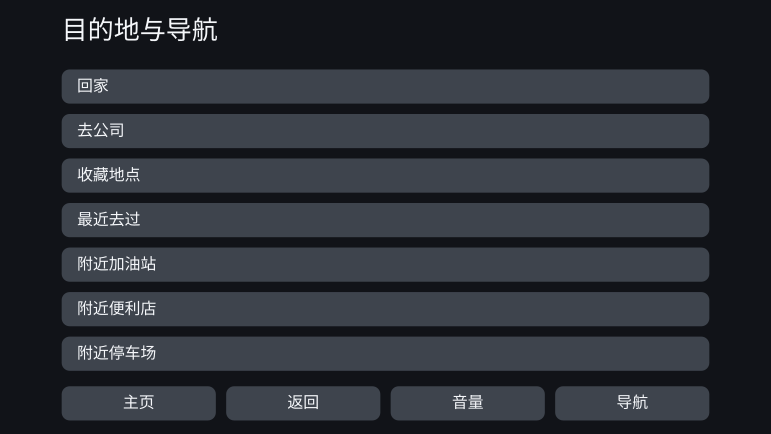
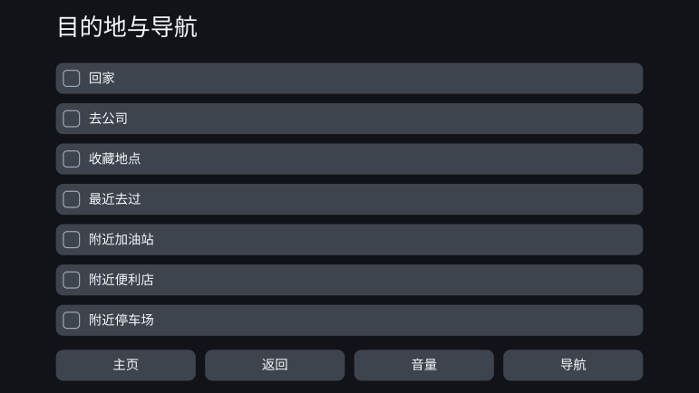

Personal Fit UI - 通过约束型设计实现UI的个性化优化
2026年8月
概述
所有人都以同样的方式使用同一套界面。本作品离开这一大规模生产的前提，探讨能否按照每个人的认知、感知与身体特点来生成界面。
所追求的并不是在使用过程中随情境不断变化的界面，而是这样一种机制：在开始使用的阶段掌握此人的特点，在遵守安全与无障碍相关约束的前提下，预先生成适合他的界面。
在这次探讨中，我实践了自己称之为“约束型设计”的思路。人依据文献与标准，设计出应当遵循的方向与边界；AI 在这一框架之内决定具体的数值与措辞，并对生成结果是否违反框架加以验证。
PoC 以车载导航为题材，为特点各异的十三个人物模型生成了界面。结果是，外观上几乎没有出现明显变化。另一方面，把约束改写成可验证形式的过程，反而让人看清了个体化优化的余地留在哪里、又在哪里被约束吞掉。
把同一套界面交给所有人，意味着什么
如今大多数产品都以大规模生产为前提来设计：用一套界面覆盖尽可能多的人。即便产品允许更改字号或显示项目的数量，用户仍需自己找到适合自己的状态并进行设置。
这种方式对许多人是奏效的。但“适合许多人”与“适合所有人”并不相同。即使产品满足了共同的设计基准，仍会留下用起来吃力的人。
这一结构同样出现在车载界面的评估之中。美国 NHTSA 关于驾驶中视线偏离的验收程序，并不要求所有被试都达到基准。合格判定以 24 名被试中有 21 名达标为条件，也就是把一定比例的人达不到基准这件事，事先写进了制度里。此外，汽车厂商提交给监管机构的材料还报告说，在多项任务中持续长时间移开视线的人大约每六人就有一位。需要说明的是，这份材料出自受监管的厂商之手，其诉求是放宽基准。本作品所追求的不是放宽基准，而是通过个体化，让能够达标的人变多。
个体化优化的界面，其意义并不在于让所有人的屏幕都变得新奇，而在于把统一界面此前漏掉的人，带进能够使用、能够安全操作的范围。
在此之前，为一个人单独设计一套界面的成本并不现实。随着 AI 可以被纳入设计流程的一部分，这一前提正开始发生变化。
作为题材的车载导航
本作品的主题不是车载导航，而是个体化优化的界面。之所以选择车载导航，是把它当作检验其可能性与界限的一个例子。
车载界面带有强烈的约束：有限的屏幕、极短的注视时间、操作的安全性。出厂前，它作为多数人都能使用的统一界面接受验证；而同样的界面，也会交到那些并不适合这一设计的人手里。
如果在约束如此严苛的领域里个体化优化仍能成立，就能具体地检验约束型设计这一思路。反过来说，也可能因为约束太强，几乎不给 AI 留下自由度。这是一个能同时观察到两种结果的题材。
在日本，截至 2026 年，支持 OTA 更新的车型与不支持更新的传统原厂导航仍然并存。另外，即使地图数据可以更新，界面的基本结构也未必会在购买之后被持续重新设计。本 PoC 设想的是一种在开始使用之后界面不会频繁更新的系统。
把个体化优化变成可以生成的机制
所谓约束型设计，是先把框架明确定下来，再让 AI 在框架之内捕捉细微差别、灵活地行动。它不同于从既定表格中取值的参数化机制——被设计的，是 AI 可以探索的解的范围本身。
科学知见并不总能给到具体的数值，有时只指明“放大”“减少信息”这样的方向。数值已经确定的部分，作为规则来计算；只知道方向的部分，则由 AI 在约束允许的范围内决定具体取值。不让这一区分变得含混，本身也是机制的一部分。
确定认知维度
不以诊断名称，而以与界面易用性相关的特点作为轴来定义：工作记忆、对干扰刺激的耐受、视觉与听觉特点、手指的精细动作能力等。
映射表
把用户的特点与应当调整的界面参数联系起来，并连同依据一并写明：哪一项特点使什么、朝哪个方向变化。
科学知见与标准
收集安全基准、无障碍标准、认知科学的研究成果，以及通用的界面设计原则。
约束条件群
生成结果必须遵守的条件。不停留在理念层面，而写成能够验证“满足了还是违反了”的形式。
设计空间
界面可能采取的各种选择：字号、触控目标、显示项目数、信息层级、通知、措辞、顺序、分组等。映射表给出调整的方向，约束条件群则剔除不被允许的解。
AI 在框架之内加以具体化
在剩余的自由度中决定数值、措辞、顺序与分组，再通过另一道检查确认其是否符合框架，只输出满足全部条件的个体化界面。
PoC：为十三个人物模型生成界面
PoC 准备了十三个特点组合各不相同的人物模型。它们并非对真实用户分布的再现，而是为了确认哪些特点会让界面发生变化，而有意布置特点所形成的验证用格点。
对每个人物模型，都把共通的统一界面作为 before，把输入其特点后生成的界面作为 after，加以对照。
几乎没有变化的例子
PS-01 —— 基准（壮年、典型）
这个人物模型在认知、感知与身体特点上都处于典型范围。个体化优化之后，文字略微变大，但显示的项目数、排布以及触控区域的大小几乎没有改变。
统一界面（before）

个体化界面（after）

出现了可见变化的例子
PS-12 —— 壮年、精细动作能力较低（感知与认知为典型）
这个人物模型在年龄、感知特点与认知特点上都与 PS-01 相同，只有手指的精细动作能力较低。在 after 中，触控目标变大，一屏显示的项目从七项减为四项。其余项目被移到下一屏，从而为每一个操作对象保证了足够的尺寸。
统一界面（before）

个体化界面（after）
文献给出了触控目标应满足的下限，也指出了操作精度较低时应当放大的方向，却没有唯一地规定“对这个人要加大多少”。正是这一未确定的部分，由 AI 在约束范围内加以具体化。
PoC 的结果
在十三个人物模型中，能够确认出明显视觉变化的只有 PS-12。对多数人物模型而言，before 的统一界面本来就足够好用；个体化优化带来的好处，至少在从画面外观上可以辨认的层面，几乎没有显现出来。
PS-12 虽然把个体化直观地呈现了出来，但这种程度的改动，用现有产品的显示设置或无障碍设置也能实现。不必由用户自己设置，一开始就提供合适的状态，这本身是有意义的；但还不能说，它创造出了非 AI 不能提出的新界面。
因此，我没有把这一结果判定为“由 AI 实现的个体化优化取得了成功”。
为什么没有产生差异
原因在于，满足约束的设计空间太窄。
车载界面存在大量出于安全考虑的下限与上限：文字与触控目标需要达到一定大小，一屏可显示的信息量也有上限。把这些逐一施加之后，留给 AI 可选的解就所剩无几。
AI 具体化的项目，在这一规模下大多也属于人只要决定一次、就能固化成一张小对照表的范围。这并不意味着“AI 是多余的”——它承担了填补文献未给出的具体数值的角色；只是留给它去探索的选项实在太少。
另一方面，措辞的改写仍留有很大的自由度。但这类差异很难被看作画面构成上的变化：人能够认知其价值的领域，与规则写不尽的领域，并没有重叠。
成果出现在框架的设计上，而不是界面上
这次 PoC 中最大的成果，并非诞生于生成界面的阶段，而是在此之前设计约束的阶段。在把标准与文献改写成机器可验证的条件的过程中，框架本身暴露出了若干处不一致。
- 对同一个界面元素，不同标准给出了各自不同的下限。
- “仅在行驶中适用”这一条件，在规格里没有可以写下的位置。
- 两条本应彼此独立的设计轴被合并成了一条，导致大多数选项都被约束排除掉了。
- 没有向 AI 充分说明哪条约束支配哪项输出，以致无关的条件被用于判断。
- 本该留给 AI 的判断被固定在了实现一侧，使约束型设计更接近一个单纯的规则引擎。
对于每一处，都是由 AI 发现不一致并指出相应位置，再由人做出判断，进而修正约束。
也就是说，这次的成果与其说是“AI 做出了新的界面”，不如说在于通过与 AI 的往复，生成界面的框架本身得到了检验与更新。在约束型设计中，AI 的角色不只是生成成品，还包括在生成之前，找出规则之间的冲突，以及那些被无意间抹掉的设计可能性。
未来工作 —— 框架要清晰，框架之内要宽
在约束型设计中，对 AI 的期待并不是从表格里取出既定的数值，而是先用约束排除明显不合适的生成结果，再从剩下的众多可能性中，给出在概率上更为妥当的解；或者，提示出人事先不会想到的模式。
这一次，这种效果没有充分显现。原因不是没有发生冲突，而是满足约束的设计空间太窄，以至于选择“更合适的解”或“新的解”几乎失去了意义。
接下来该问的，不是 AI 是否有效，而是：设计空间要宽到什么程度，才会产生只有 AI 才能带来的效果？
在下一次实践中，我会选择这样的题材：既能保持安全性，又能留下多个妥当的解，而且那些用规则写不尽的差异，人也能够识别为价值。框架要明确地定下来，但要在其中留出足以让 AI 探索的宽度。二者兼顾，才能让约束型设计不只是自动化，而成为 AI 时代的一种设计方法。